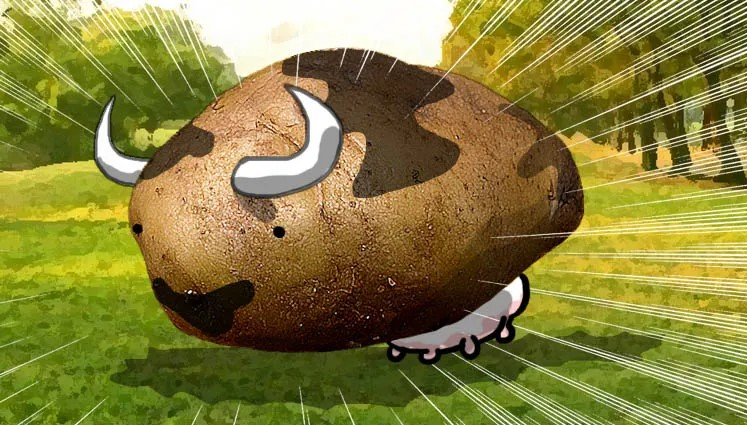
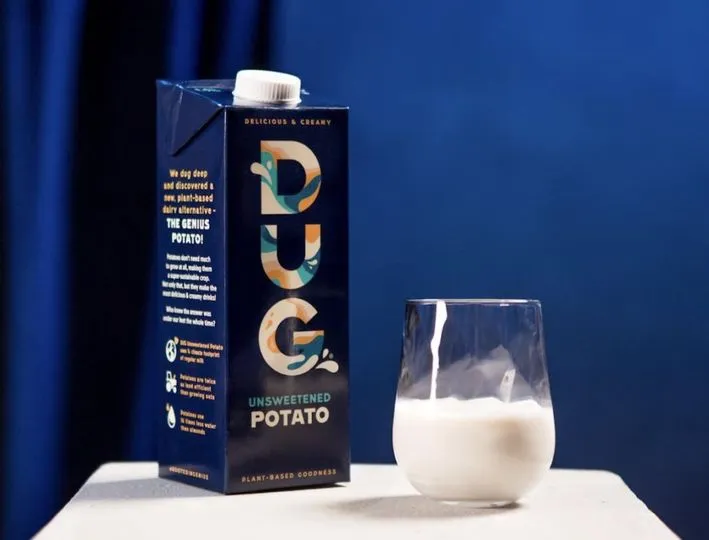

Leche de papa, la nueva bebida que
está a punto de conquistar el mundo

Cuando se trata de alternativas lácteas, ya tenemos muchas «leches» para elegir, pero la última alternativa podría cambiar las reglas del juego debido a lo accesible y barato que es su ingrediente principal.
La leche de papa no suena como la cosa más deliciosa del mundo, pero tampoco la leche de avena o la leche de soja, y sin embargo resultaron ser muy populares. Sin mencionar que esta nueva alternativa láctea es
aparentemente «deliciosamente cremosa» y funciona muy bien para lattes y capuchinos caseros.
Además, la humilde papa utiliza mucha menos tierra y recursos que otras plantas que actualmente se
utilizan para la producción de leche, lo que hace que tanto la verdura como la leche sean más
accesibles.
DUG, la única marca de leche de patata disponible comercialmente en el mundo,
hizo su debut recientemente en el mercado del Reino Unido, donde se espera que tenga un gran
impacto basado únicamente en la demanda de alternativas de productos animales en ese mercado.
La empresa sueca tiene planes de expandirse a otros países europeos, así como al mercado chino,
pero no parece probable un lanzamiento en América en un futuro próximo.
Sin embargo, si te mueres por probar la leche de papa, te alegrará saber que puedes prepararla
tú mismo, ya que hay docenas de recetas disponibles online. Básicamente, solo hierves la papa,
luego la licúas con el agua en la que hirvió, la cuelas, y agregas más agua hasta que alcance
la consistencia deseada.
La versión de leche de patata de DUG también contiene maltodextrina, proteína de guisante,
fibra de achicoria, aceite de colza, fructosa (un azúcar), sacarosa (un azúcar), regulador de
la acidez, carbonato de calcio, lecitina de girasol (un emulsionante), sabor natural y está
mezclada con vitaminas.

Aunque el reciente lanzamiento de la leche de papa DUG en el Reino Unido causó sensación, el
éxito de esta alternativa láctea no está garantizado, ya que algunos de los que la probaron
describieron su sabor como «neutral» o se quejaron de un regusto salino. La falta de proteínas
también podría ser un problema para algunas personas. Con solo un gramo de proteína por
porción, en comparación con los ocho gramos de la leche de soya y los tres de la leche de
avena, no es exactamente una fuente inagotable de energía, pero eso no debería importar
demasiado si obtienes tu proteína de otras fuentes.
Pero donde es probable que la leche de papa marque una gran diferencia es en la sostenibilidad.
El cultivo es dos veces más eficiente que el cultivo de avena, en términos de uso de la tierra,
requiere poca agua y tiene un mejor rendimiento que la mayoría de las plantas. La nueva bebida
puede tener una enorme colina que escalar para competir con otras leches de origen vegetal,
pero ciertamente tiene la oportunidad de convertirse en la próxima moda de alimentos
saludables.